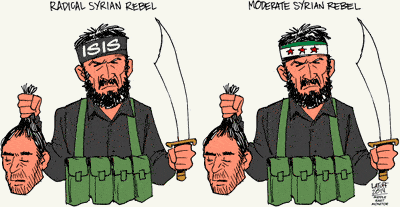
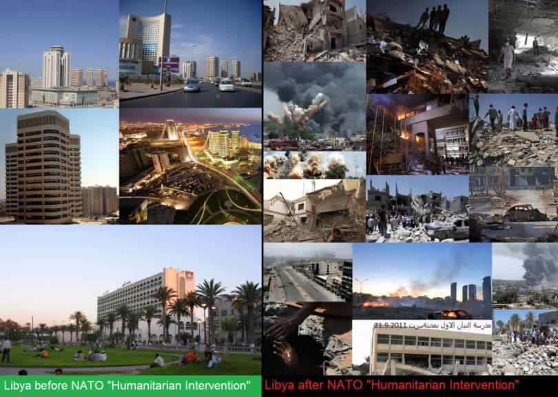
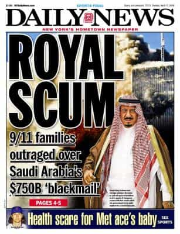

Corey is an iconoclast and the author of 'Man's Fight for Existence'. He believes that the key to life is for men to honour their primal nature. Visit his new website at primalexistence.com


Besides the US election, this year’s most important event that will change the course of world history is the Syrian war. As of now, the Syrian Arab Army, or SAA, is pushing forward to retake the country’s second city, Aleppo, while there are also reports that they’re making plans to assault Raqqah itself. And despite all Western efforts to destroy the country as they did with Libya, and all the media’s propaganda work to demonize him, Assad is the only legitimate power in Syria who has the capacity to both win the war and bring stability to the country. Anything less than his victory would mean that the country will become yet another failed state in the Middle East serving as a hotbed for radical Islamic terrorists.
The Syrian war is extremely complicated with many factions within the country and just as many outside of it siding with the government or its opposition depending on their own national interests and ideological leanings. The war—that has now gone on for more than five years—has brought untold amount of suffering to its citizens and has global implications as the migrant crisis and terrorism in Europe has shown. I don’t pretend to be an expert and I won’t get into all the details of the war, but there are clear reasons why the government forces under Assad must come out victorious from this brutal conflict.
While Zionists and other morons in the West are goading over the fact that Muslims are killings each other, in reality this is a war between a secular Arab state that tolerates many religious minorities—including Christians and Jews—against Islamic jihadists like ISIS, al-Nusra, and other “moderate” rebels who behead anyone that doesn’t submit to their strand of Sunni dogma. In other words, this is a battle for the Syrian nation’s survival against Islamic terrorists from all over the world who are funded by the US and its Sunni allies in the region.

People of the West should remember that Syrians (along with Iraqis and Yemenis) have been the greatest victims of Islamic terror attacks. A suicide bomb attack in Baghdad that kills 120 people is not going to get as much media attention as smaller attacks in Europe, and Facebook is not going to introduce Syrian flags to be displayed on people’s profile pictures to show solidarity for the thousands murdered by the jihadists.
And while Western governments are using the public fear of terrorism to further justify and implement police states (even as they allow millions of refugees to flood in without screening them), and pussyfooting in actually engaging the terrorists, no one is doing more to fight ISIS and other Islamist groups than Assad and his allies. The SAA with the help of Russians have killed more terrorists and extremists in the past few years than anyone in the world, but will they get any credit for their heroics? No, for the West is more interested in sacrificing Syria for Zionist and Sunni interests than they are in defeating terrorism.

Nothing good has ever come out by toppling secular regimes in the Muslim world. Every Arab state that the US and its flunkies have destroyed by introducing “democracy” has turned into a hellhole and a breeding ground for extremist groups. So why should we believe that yet another regime change in the Middle East will be a good thing for the world?
History has proven again and again that a strong, authoritarian ruler is often necessary in the Arab world to prevent sectarian violence and radicalization through its secular, nationalist authority. Saddam Hussein may have been too ruthless and ambitious, but Iraq was far better under his rule than the chaos they are in now. As for Syria, Assad is—by far—the best hope Syrians ever have of living in a stable and secular nation.
All the efforts by the Western media and politicians to paint him as a brutal dictator, including the accusation of using of chemical weapons (which was most likely the work of Western-backed “rebels”) had been nothing but a build-up towards intervention in Syria—an effort which was largely thwarted by Russia’s diplomatic maneuvering. Besides, who cares if he’s a “brutal” dictator considering the enemies he is facing? The last thing Syria needs is some soft, democratically-elected clown who would sellout his own country like they do in the EU.
These are the lives of people living under the safety of the Syrian government that the West wants to destroy:
And by the way, when will the US bring regime change to theocratic Saudi Arabia, the Wahhabi cancer that funds Sunni extremists around the world (and was almost certainly involved in the 9/11 attacks)? Oh, I forgot. They’re allies.

Europe ignored his warnings, now it’s paying the price for it.
Even if you don’t care about Syria and its people, if you live in the West—and especially Western Europe—you should know that there are consequences to this war for you as well. For all the bitching and moaning people do about Muslim immigrants and refugees, none of these people have done anything to fight back against their own criminal governments that caused the problem in the first place and is welcoming the migrants into their countries.
By winning the war and bringing peace and order back to the country, Assad will effectively slow down the flow of migrants entering Europe and will encourage many there to return to Syria. There are already reports of many Syrian refugees returning to their homes thanks to the advancements made by the SAA and the Russian air force. This, of course, doesn’t mean that all refugees will halt and that Europe will be free from having to deal with migrants—in fact, things are likely to get worse before they get any better. But defending one’s own borders are something Europeans need to take responsibility for themselves by challenging those who govern them.

Comparisons have been drawn between the Syrian civil war and the Spanish civil war, and it is a relevant comparison. Much like the Spanish counterpart, the Syrian conflict has implications beyond the nation itself with external powers hedging their bets on the fate of Syria to either expand or defend their own sphere of influence.
The truth is that Syria is but a single chessboard in the grand war between the globalist forces of the American-Wahhabi-Zionist Axis and its client-states on one side and the opposition powers that resist it—led by Russia, China, and Iran—on the other. Crisis in Ukraine, the Yemeni civil war, the emergence of BRIC, the currency wars, and the culture wars are all part of this power struggle.
The reason why Syria is being targeted is because the Sunni states, led by the Saudis and Erdogan’s Turkey, want a puppet Sunni state to counter Iran’s Shia influence while the US and the West are simply doing the bidding of their Israeli overlords while trying to knock off Russia’s Middle East and Mediterranean ally (note how they previously tried to cut off Russian naval influence in the Black Sea by knocking out pro-Kremlin government in Ukraine, which is why Putin decided to take over Crimea). Therefore, the victory of the Syrian state against the globalist-sponsored terrorists would be a victory for humanity and a blow to the American agenda for a New World Order.

Who knows if the Syrian war will be an indication of a global war to come just as the Spanish civil war had been the prelude to the second world war? The world is changing rapidly and we shouldn’t discard any possibilities. Peace in one moment can turn into hell the next, shattering all dreams and hopes. History will repeat itself and open new chapters, but it has never lied.
Read More: Terrible Mother Who Took Her Kids To Syria Now Wants To Leave Islamic State